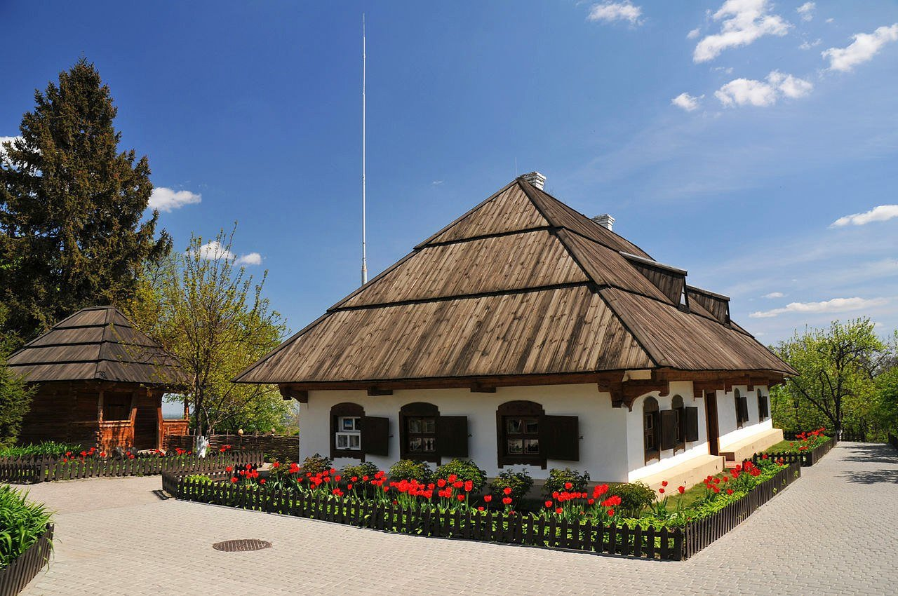

Моя Батьківщина - Полтава

Опис місць:
- Краєзнавчий музей: Один із найстаріших музеїв України, який зберігає культурну спадщину Полтавщини.
- Біла Альтанка: Символ Полтави, розташований на Івановій горі.
- Садиба Івана Котляревського: Меморіальний комплекс, присвячений великому українському письменнику.